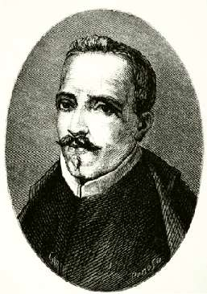

Борис Акунин
Мой календарь
И опять у нас, писателей, профессиональный праздник. Потому что быть писателем вообще празднично. Выдумываешь всякую всячину, создаешь из ничего, из букв, какие-то химеры, а потом эти турусы на колесах едут по миру в виде книг, и люди платят тебе непонятно за что не только деньгами (они-то истратятся), а валютой более ценной - вниманием, интересом, иногда любовью, бывает, что и бессмертием. Потому что настоящая проверка, конечно, начинается, когда писатель уходит, а книга остается.
Сегодня отмечается Всемирный день книги. Ура!
Символично, что приурочен он не к годовщине рождения какого-нибудь классика, а к грустному дню в истории литературы, когда умерли сразу три больших писателя. 23 апреля 1616 года главный английский автор Вильям Шекспир, главный испанский автор Мигель Сервантес и главный перуанский автор Гарсиласо де Вега перестали жить на Земле и остались жить только в книгах. (Праздник первоначально придумали испанцы, поэтому перевес испаноязычной литературы).
Понятно же, что главная и настоящая жизнь художника - в картинах, композитора - в музыке, а писателя - в книгах. Каждый сочинитель в минуты приподнятого настроения говорит себе: нет, весь я точно не умру, потому что душа в заветной лире мой прах переживет и тленья убежит.
Как нужно отмечать праздник, я думаю, понятно. Купите книгу. Как минимум одну. Можно не бумажную, а электронную. Лучше всего, конечно, сами знаете чью. Календарь-то мой.